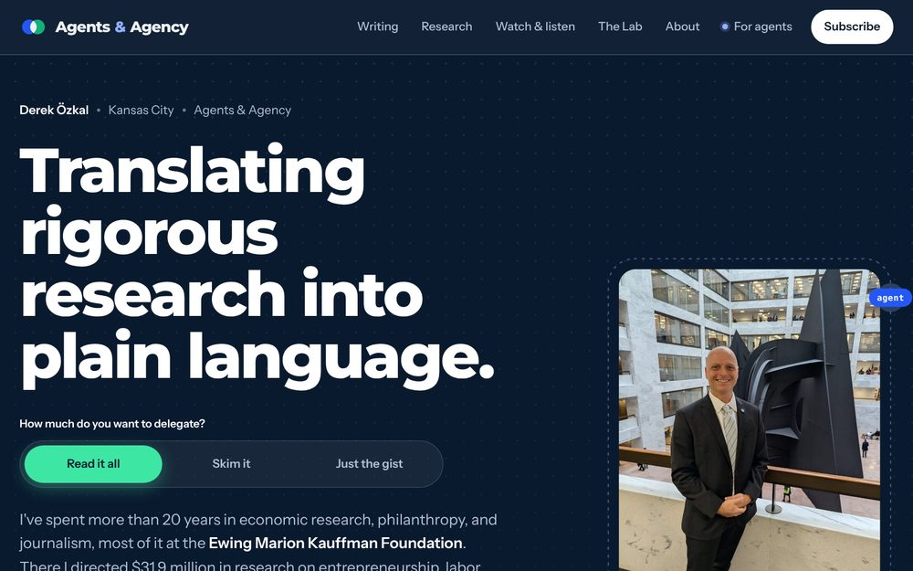
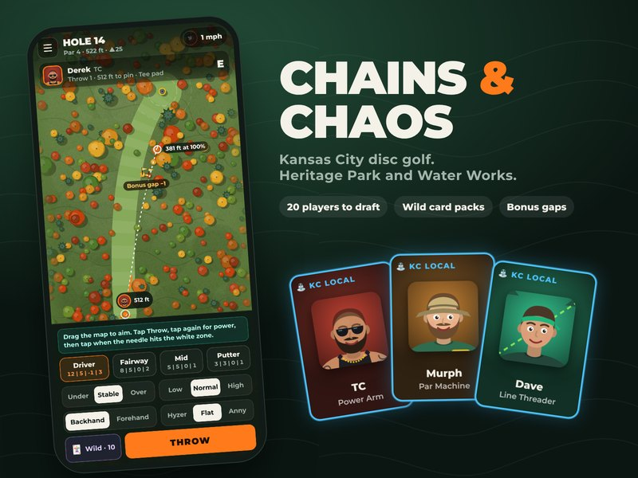
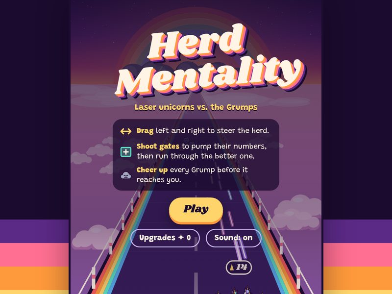
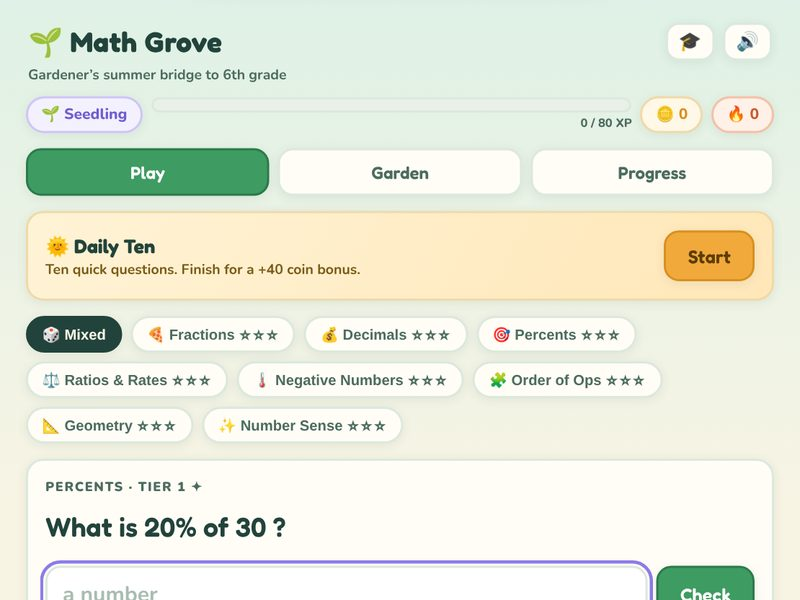
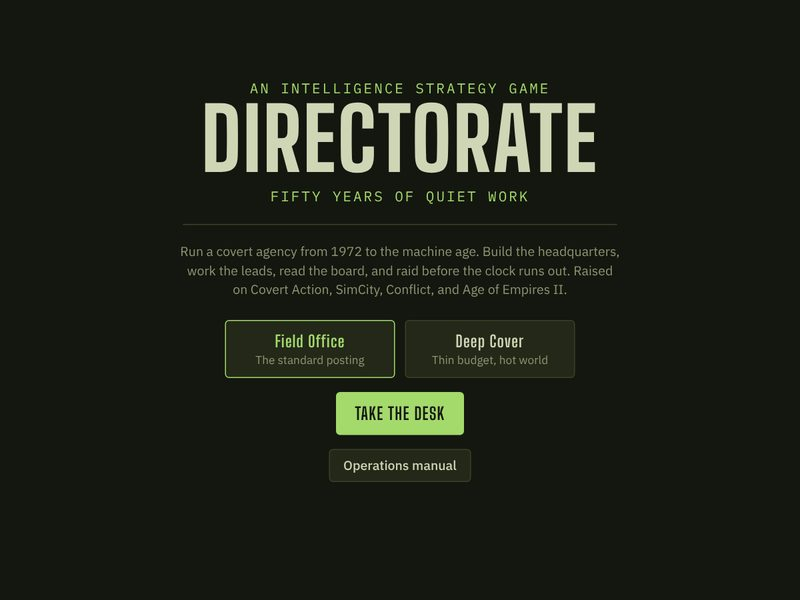
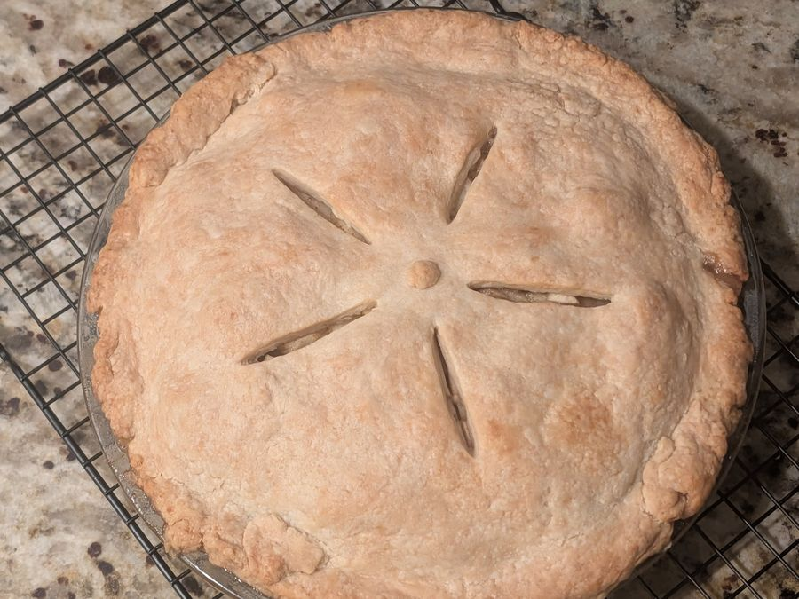
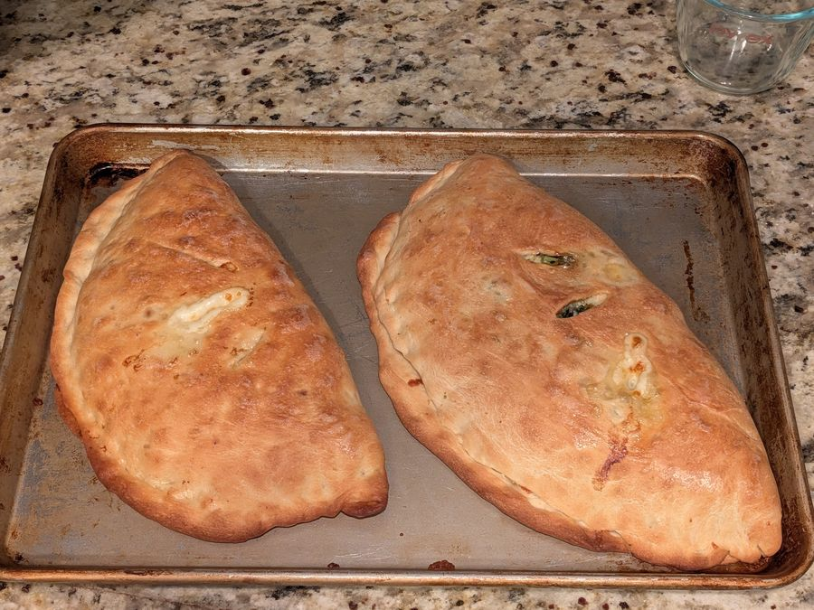
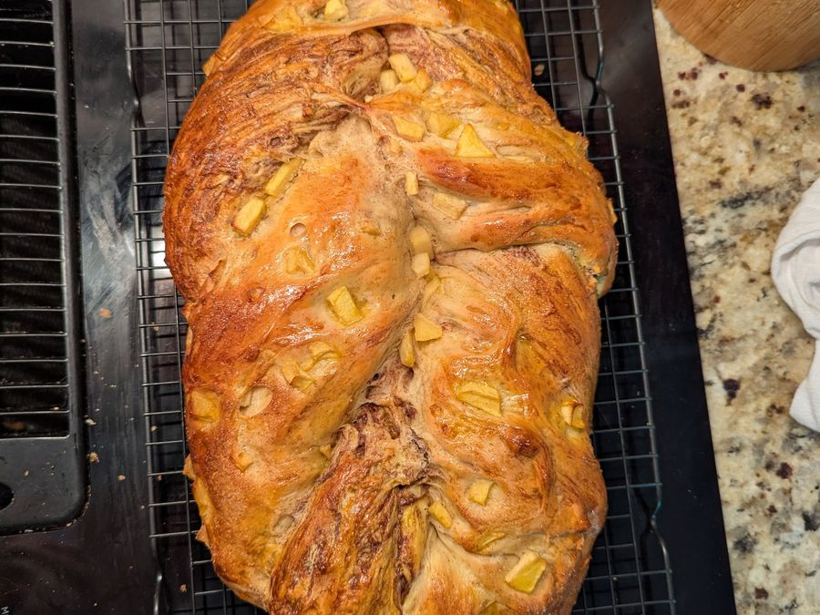

The Lab
I write about AI and work. Here I build with it.
Building is how I check whether the ideas hold up. Everything here is a prototype. Some are tools, some are models, and four are games.
Prototypes
Working versions of ideas I write about. Each one is an argument I haven't verified yet. If a number looks wrong, tell me in the comments.
This website
The site you're reading is a Lab project too. I wrote it and built it with Claude, then edited until it sounded like me. It's plain HTML files on GitHub Pages, with no framework and no hosting bill.

The Arcade
Four browser games built with AI. All are free, need no account, and work on a phone.

Chains & Chaos
Disc golf at Heritage Park and Water Works, with hole lengths and pars from the published UDisc layouts. Draft from 20 players, including six KC locals. Murph gets a stroke back after three straight pars. TC has tattoos and extra power. Pick a disc, its stability, and a high or low line, then thread the gold gaps for a bonus. Each player gets ten face-down wild cards. One might skip your disc across a pond. Another hands it to a duck.
Play Chains & Chaos
Herd Mentality
A herd of laser-horned unicorns defends a rainbow bridge from the Grumps, an army of gray clouds. Drag to steer, shoot gates to raise their numbers, and run through the better one. A Grump you hit floats away happy. Bosses include The Monday and Per My Last Email. Levels don't end, and progress saves in your browser.
Play Herd Mentality
Math Grove
A summer math tutor built for my daughters and open to anyone. Solve problems, earn coins, and grow a garden that's all yours. Two grade bridges, entering 3rd grade and entering 6th grade, each with 8 topics and 3 tiers. Clear all three tiers to earn a star. There's also a bonus Snake game played inside the garden you grew. No account, no ads, saves in your browser.
Open Math Grove
Directorate
Run a covert agency across four eras, 1972 to 2026. Build headquarters, work field leads, solve conspiracies before they execute, and manage global tension. Eight minigames feed a strategy layer. Influenced by some of my favorite games as a kid, like Covert Action, SimCity, Conflict, and Age of Empires II. One sitting, no save state.
Open DirectorateThe Kitchen
I spend my working hours on human-AI collaboration, so it seems only fair to disclose my own. These were made by me, with AI as sous-chef for recipes, ratios, and troubleshooting. Peer review was conducted by my family, and the braided cinnamon apple bread got a "revise and resubmit." So I made an apple pie, which went much better.



Findings so far: AI is a good cooking partner. It's patient with basic questions, happy to help at 10 p.m., and wrong about an oven temperature about once per project. Also in the rotation: veggie burgers, stews, and a cheesecake. Methodology shared on request.